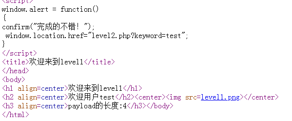
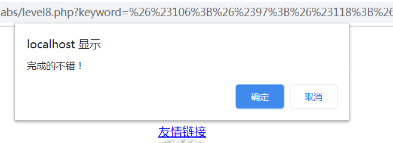
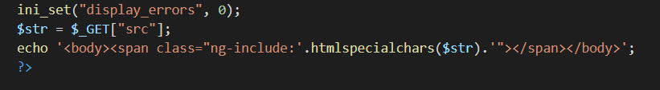

xss-labs记录
记录一下学习xss入门的过程。
1.基础知识
1.认识xss
xss的英文名字是cross-site-script，俗称跨站脚本，是一种注入攻击，指攻击者在被攻击的网页上利用编写时的漏洞注入恶意脚本代码，受害者访问该页面时，恶意代码会在用户的浏览器上执行。有三种类型，分别是：
反射型
- 反射型xss一般出现在URL参数中及网站搜索栏中，由于需要点击包含恶意代码的URL才可以触发，并且只能触发一次，所以也被称为“非持久性xss”。
存储型（持续性）
- 存储型xss一般会出现在网站留言板，评论处，个人资料处，等需要用户可以对网站写入数据的地方。也被称作“持久性xss”。存储型XSS比反射型更具威胁性，并且可能影响到web服务器自身的安全。
dom型
DOM XSS是基于dom文档对象模型，前端脚本通过dom动态修改页面，由于不与服务端进行交互，而且代码是可见的，从前端获取dom中的数据在本地执行。也就是说，客户端的脚本程序可以通过DOM动态修改页面内容，从客户端获取DOM中的数据并在本地执行。
常见的可以操纵dom的对象：URL，localtion,referrer等
2.注入技巧
1.JS常用的弹窗函数
弹窗搞得动静太大了，一般不建议这么搞。
alert()
alert是最常用的方法，内容是变量或者字符串，无返回值。
用法：
1 | <script>alert('xss')</script> |
confirm()
confirm比alert多一个“取消“按钮，返回值：确定-true，取消-flase
用法:
1 | <script>confirm('xss')</script> |
prompt()
比confirm多一个输入框，返回值：确定-返回输入的值，字符型，取消-null
用法：
1 | <script>prompt('xss')</script> |
2.常见注入点
url
输入框
请求头
源码
- form表单中隐藏的
input标签可能存在注入点 - EXIF注入，当浏览器解析.jpg图片的时候，某些安装插件的用户会解析图片属性，可以在图片属性中构造注入语句。
- ng-include注入。可将其他存在注入漏洞的页面导入目标页面，进而实现在目标页面的注入。
- 当页面存在利用js代码修改修改页面结构的时候，可能存在DOM注入，可以利用
#绕过后台防护。
- form表单中隐藏的
3.常用payload
本小节来自https://blog.csdn.net/weixin_43901998/article/details/108360267，比我自己总结的齐的多了。。。
1.构造标签
1 | 1. <script>alert(1)</script> |
2.构造事件
1 | 1. " οnclick="alert(1) |
3.绕过思路
| 防护机制 | 可能的绕过措施 |
|---|---|
| 删除关键字 | 双写绕过 |
| 识别关键字改写或阻拦 | 大小混写绕过；构造不常用的标签进行注入 |
| 过滤空格 | 利用%0a,%09,%0d等代替空格 |
| 过滤script | 利用img等不需要使用script的标签 |
| 过滤标签 | 尝试构造事件触发js |
注意：使用html实体编号绕过的时候，实体编号必须要是标签中的属性值（href=”实体编号”）或者事件的值(比如οnclick=”实体编号”)这样浏览器才会翻译解析。过滤了尖括号就想想能否用on事件来触发漏洞。
4.常见的防护手法
1.html实体化
1.常用函数
htmlspecialchars()
函数把预定义的字符转换为 HTML 实体。
预定义的字符是：
1 | & #转化结果是 & |
语法：
1 | htmlspecialchars(string,[flags,character-set,double_encode]) |
解释：
1 | string 必需。规定要转换的字符串。 |
如需把特殊的 HTML 实体转换回字符，请使用 htmlspecialchars_decode()函数。
htmlentities()
用法同htmlspecialchars()一样。要把 HTML 实体转换回字符，请使用 html_entity_decode() 函数。
提示：请使用 get_html_translation_table() 函数来返回 htmlentities() 使用的翻译表。
绕过方法
1.寻找其他注入点
2.html编码->实体化->html代码
2.靶场记录
Level 1：未做任何处理
观察发现，url中的内容会在网页中回显，那么这里可以当作注入点
输入<script>alert('xss')</script>，成功，会自动跳转到下一关
分享网页源代码，其中定义了alert的js函数，自然触发到下一关了。

Level 2：简单闭合input标签
看到url中的信息以及结合网页代码，可以得出输入框中的内容就是keyword的内容，那就好办了，先输入<script>alert('xss')</script>试一下
之后查看网页源代码
看到<与>被实体化了，那就猜测后台对输入文本进行了实体化。但是在input标签那里没有做处理，我们就从这里入手。
根据前端input标签构造闭合标签，并注释掉后边的，"> <script>alert('xss')</script> // 通过！
Level 3：实体化<、”、>
看到输入框走一波，检察网页源代码发现被实体化了
这时候不急，输入' " < > /,测试一下哪些被处理了，哪些没被处理。
单引号没被实体化，于是有以下方法
1.onclick点击事件
可以使用点击事件，onclick事件会在元素被点击时发生
语法：
1 | HTML中： |
根据前端input标签构造闭合payload如下
'onclick=alert("xss") # ,,确定之后点击一下输入框即可成功！
2.onfocus焦点事件
onfocus 事件在对象获得焦点时发生。
onfocus 通常用于 ,
使用鼠标点击该输入框时输入框被选中，该输入框获得焦点,此时输入框就会触发onfocus事件.
payload：'onfocus=javascript:alert('xss') >
3.JavaScript伪协议
上一个方法是结合了JavaScript伪协，这里介绍一下
javascript:这个特殊的协议类型声明了URL的主体是任意的javascript代码，它由javascript的解释器运行。
将javascript代码添加到客户端的方法是把它放置在伪协议说明符javascript:后的URL中。这个特殊的协议类型声明了URL的主体是任意的javascript代码，它由javascript的解释器运行。如果javascript:URL中的javascript代码含有多个语句，必须使用分号将这些语句分隔开。
javascript URL还可以含有只执行动作，但不返回值的javascript语句。javascript:alert("xss")装载了这种URL时，浏览器仅执行其中的javascript代码，但由于没有作为新文档来显示的值，因此它并不改变当前显示的文档。
payload：'onclick='javascript:alert(/xss/),输入进行搜索，之后在输入框点击一下即可触发弹窗。
Level 4：双引号闭合
查看HTML源码，和上一关一样，只不过input标签的value是双引号闭合，这时候我们输入' " < > /,测试一下
可以发现input标签处只是对<和>进行了实体化，这样就可以构造我们的闭合标签进行注入了。可以用js伪协议或者是点击事件进行触发
payload："onclick='javascript:alert(/xss/)
或者："onclick=alert("xss") #
Level 5： 构造超链接标签
输入<script>alert('xss')</script>查看源码
在h2标签处实体化了<和>，在<input>标签则没有使用HTML实体编码而是将script转为scr_ipt
另外进行点击事件和焦点事件的测试，发现也将onclick和onfocous转化成了o_nclick和o_nfocous
另外检查' " < > /发现input标签处没有进行实体化
这里解决方法是构造超链接标签
payload："><a href="javascript:alert(/xss/)">alert</a> <"
不过需要点击alert按钮才能触发
Level 6：大小写绕过
第一步检查' " < > /实体化结果，input标签处没有进行实体化，且闭合是双引号
接下来检查对标签也没有进行处理，结果如下
1 | <script> #<scr_ipt> |
对标签进行简单的大小写竟然成功了！原因是html不区分大小写，xml对大小写敏感
payload："><Script>alert("xss")</scriPt>
Level 7： 复写绕过
第一步检查' " < > /实体化结果，input标签处没有进行实体化，且闭合是双引号
接下来检查对标签也没有进行处理，结果如下
1 | <script> #<> |
对标签进行简单的大小写测试发现结果和上面一样。
进行复写，发现绕过！
payload："><Scriscriptpt>alert("xss")</scscriptriPt>
Level 8：html编码->实体化->html代码
这一关打开看到是添加友情链接，输入test测试发现是把输入内容添加到一个超链接标签里面，这就是注入点
1.检查' " < > /实体化结果，发现只是对双引号进行了实体化
2.检查对标签处理情况，结果和level6一样
3.检查大小写情况，结果是在标签中加入了_
4.由于没有删除关键字，所以不用进行复写实验了。
5.进行实体编码实验
payload：javascript:alert(/xss/)
转换后的Unicode：javascript:alert(/xss/)

添加后点击友情链接即可。
为什么用Javascript伪协议？
因为这里涉及到url跳转，即url解析。
Level 9：url匹配
按照level 8来实验，发现无论什么结果都是
那么猜测这里对url地址做了匹配，只有包含正常的url地址才能添加到href属性值中
实验http://javascript:alert(/xss/)，发现对关键字插入了_
尝试对关键字进行大小写，发现结果一样
最后按照level 8一样进行编码
payload：`
1 | javascript:alert(/xss/)// http:// |
Level 10：隐藏域
检查' " < > /实体化结果，发现只单引号和/没有进行实体化
但是进行查看前端源码的时候发现有一点不一样，几个input标签都设置了hidden，这就是隐藏域
此题有两种解法
1.修改隐藏域属性
隐藏域
来源于：https://www.cnblogs.com/syomm/articles/5825976.html
用法：
1 | <input type="hidden" name="" value=""> |
解释：
1.隐藏域在页面中对于用户是不可见的，在表单中插入隐藏域的目的在于收集或发送信息，以利于被处理表单的程序所使用。浏览者单击发送按钮发送表单的时候，隐藏域的信息也被一起发送到服务器。
2.有些时候我们要给用户一信息，让他在提交表单时提交上来以确定用户身份，如sessionkey，等等．当然这些东西也能用cookie实现，但使用隐藏域就简单的多了．而且不会有浏览器不支持，用户禁用cookie的烦恼。
3.有些时候一个form里有多个提交按钮，怎样使程序能够分清楚到底用户是按那一个按钮提交上来的呢？我们就可以写一个隐藏域，然后在每一个按钮 处加上onclick="document.form.command.value="xx""然后我们接到数据后先检查command的值就会知道用户 是按的那个按钮提交上来的。
4.有时候一个网页中有多个form，我们知道多个form是不能同时提交的，但有时这些form确实相互作用，我们就可以在form中添加隐藏域来使它们联系起来。
5.javascript不支持全局变量，但有时我们必须用全局变量，我们就可以把值先存在隐藏域里，它的值就不会丢失了。
6.还有个例子，比如按一个按钮弹出四个小窗口，当点击其中的一个小窗口时其他三个自动关闭．可是IE不支持小窗口相互调用，所以只有在父窗口写个隐藏域，当小窗口看到那个隐藏域的值是close时就自己关掉
解题方法
修改前台input属性，任何一个都可
会出现一个空白输入框，点击输入框，即会出现弹窗
2.突破用隐藏域属性
利用3个隐藏属性，把这三个参数传进去看谁能够突破
payload：test&t_link=1&t_history=2&t_sort=3
发现第三个可以突破。
构造payload：test&t_sort=" type="text" onclick="alert('xss')
设置type=text的目的是因为我们用到是点击事件来触发弹窗，所以要把这个输入框显示出来才能点击触发
Level 11：referer注入
检查' " < > /实体化结果，发现只单引号和/没有进行实体化,在查看前端源码时发现也和前一关差不多有一个隐藏域，但是多了一个t_ref，又结合没有做测试时发现其值是上一关的payload
看到一个新标签，并且命名和referer很像，那么判断这是个referer。
若是没有注意到这个怎么办？按照上一关的方法来，先看看有哪些可以突破
payload：test&t_link=1&t_history=2&t_sort=3&t_ref=4
发现第三个可以突破。
构造payload：test&t_sort=" type="text" onclick="alert('xss')"
但是双引号被转义了。。。
既然浏览器找不到利用点了那就抓包分析一下HTTP数据
可以发现没有referer，那么我们加上一个试试?
可以发现referer中的信息就是第四个标签的内容了，那么此时我们就可以构造payload了
payload：referer:"type="text" onclick="alert('xss')"
接下来把修改后的包放到浏览器去就ok了
还有另外一种方法就是和10关一样在前端修改input标签
Level 12：user-agent注入
这一关学聪明了(主要是懒；。。)直接查看前端源码
发现第四个标签的内容是user-agent
直接抓包修改UA为"type="text" onclick="alert('xss')"
点击触发即可
另外一种也是修改前端页面的方法，同11
Level 13：cookie注入
直接走一波网页源码
发现新的标签t_cook，猜测和cookie相关，抓包初始流量走一波
修改cookie："type="text" onclick="alert('xss')"
over！
Level 14：图片exif
本节参考：https://blog.csdn.net/qq_32393893/article/details/104814749
1.什么是exif
exif，可交换图像文件格式。是专门为数码相机的照片设定的，可以记录数码照片的属性信息和拍摄数据。可使用鼠标右键进入属性页面查看部分信息。
2.exif xss漏洞原理
有些网站有读取图片exif信息的功能，当网站读取到的恶意的exif信息就会触发这个payload。
有些谷歌浏览器安装了EXIF Vewer插件，而chrome Exif Viewer插件获取图片exif信息的时候没有过滤，导致了XSS代码的执行。
3.怎么修改exif信息
linux系统系统
1 | sudo apt install exiftool #安装exiftool工具 |
windows操作系统
鼠标右键进入属性页面-双击直接填写payload-上传弹窗
Level 15：ng-include包含xss
查看源码
注意到angular.min.js，我不了解Angular，所以我查了class="ng-include"AngularJS ng-include 指令 用于包含外部的HTML文件，包含的内容作为元素的子节点，属性值可以是一个表达式返回一个文件名；意思就是我们可以利用src包含一个存在xss的页面（包含level13/12/11没反应）
ng-include 指令用于包含外部的 HTML 文件。
包含的内容将作为指定元素的子节点。
ng-include 属性的值可以是一个表达式，返回一个文件名。
默认情况下，包含的文件需要包含在同一个域名下。
1 | src= 'level10.php?t_sort=" onclick=alert(/xss/) type="text" >< ' |
1.修改网页前端
修改前端img标签代码

2.传递参数
也是查看源码之后才发现ng-include传递参数是用src

直接在网页url处构造payload：?src= 'level10.php?t_sort=" onclick=alert(/xss/) type="text" >< '
Level 16
看一下源码发现没有什么可以利用的点，只是传递的参数被传入了
在url里面输入<script> ' " /试一试
发现关键字、空格、/被替换成了空格字符实体编码 
绕过思路：可以用回车来将它们分开。
而且这里/符号也被编码了，所以我们需要的是一个不需要闭合的标签，比如之前所用过的<a href>
payload：
1 | <a%0Ahref='javas%0Acript:alert("xss")'> |
成功弹窗
Level 17
直接看源码
提交的两个参数的值出现在了<embed>标签的src属性值中，猜测该标签应该就是突破口。
测试一下' " <script> /
方法一
构造payload：?arg01= onmousemove&arg02=javascript:alert(/xss/)
方法二
<embed>标签就是引入一个swf文件到浏览器端，并且它的src属性值没有添加引号，所以不用闭合
但是我本地浏览器不支持此插件，使用没能复现成功
Level 18
和上一关一样。。。
Level 19：flash xss
这里看前端源码发现src的值使用双引号括起来的，而且丝毫不要怀疑进行了实体化
这一关涉及一种xss攻击手段叫做flash xss
Flash产生的xss问题主要有两种方式：
- 加载第三方资源
与javascript通信引发XSS。
常见的可触发xss的危险函数有：
getURLnavigateToURLExternalInterface.callhtmlTextloadMovie等
要想知道这一关的是不是属于flash xss，只需要对引用的swf文件进行反编译然后进行源码分析。
这里我说使用的对此类文件进行反编译的工具是jpexs-decompiler。
项目地址:https://github.com/jindrapetrik/jpexs-decompiler
其实flash在不久将会被弃用，所以搞懂这关用处不大，看一下这两篇文章
https://www.freebuf.com/sectool/108568.html